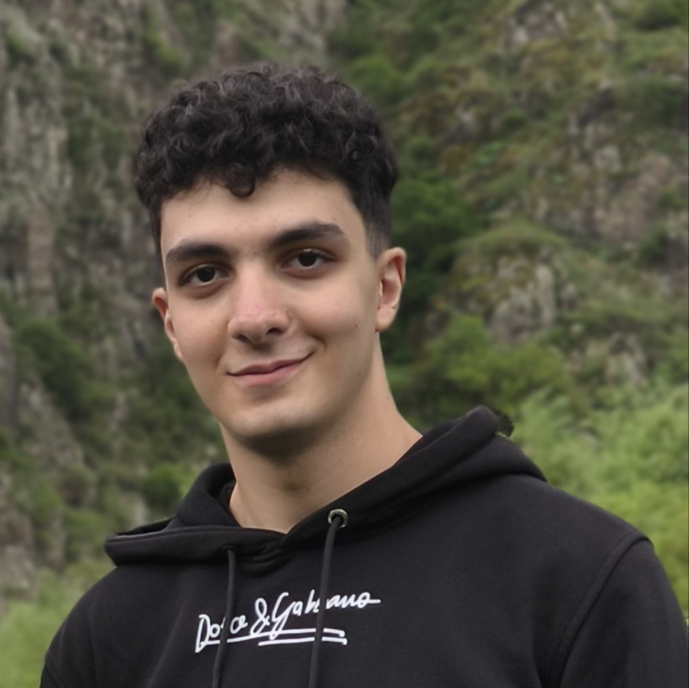
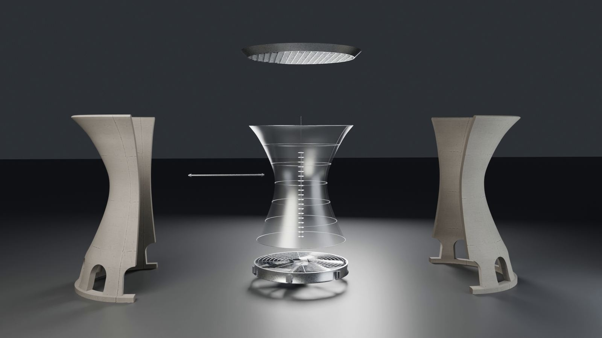
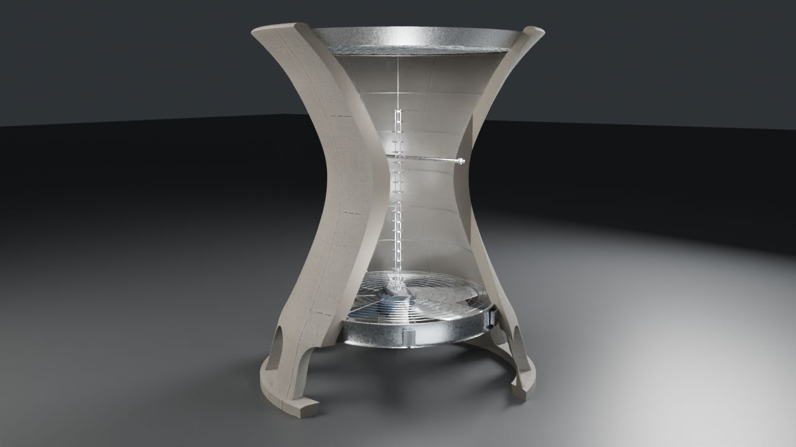
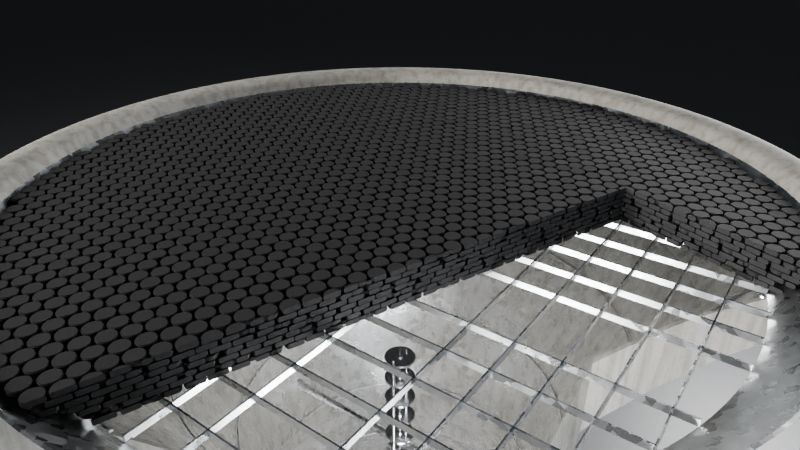
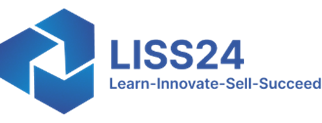
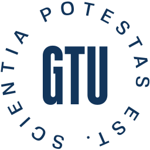
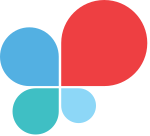
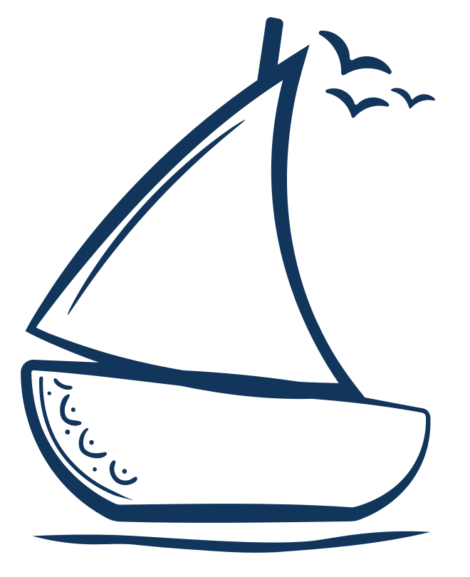
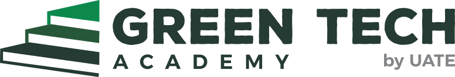
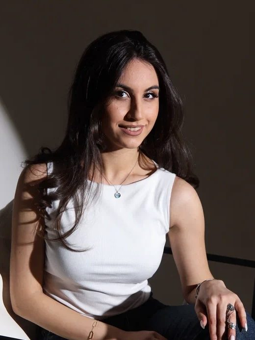

01
02


03
04
05
| Aquilo |
|---|
06
07
- NPUA

Erasmus+ LISS24

Social Impact Award
Seaside Startup Summit
Green Tech Academy
08

09



| Aquilo |
|---|

Erasmus+ LISS24

Social Impact Award
Seaside Startup Summit
Green Tech Academy
